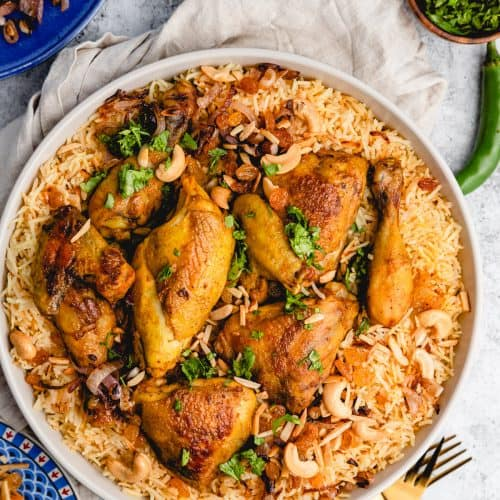

How to make Machboos !
Chicken Machboos is a complex dish that is wonderful and is considered the national dish of Bahrain. It calls for a popular Bahraini spice mix called Baharat . The chicken is juicy and tender and the rice has a rich bouquet with the essence of Middle Eastern flavors. A keeper you will want to make often. Serve with a light Arabic salad for a delicious meal.
What you will need
For the baharat
- 1 tablespoon Black Peppercorns
- 1 tablespoon cumin seeds
- 2 teaspoons coriander seeds
- 1 cinnamon stick about 2 inches long
- 1 teaspoon whole cloves
- ¼ teaspoon green cardamom seeds
- 1 tablespoon paprika powder
- ¼ teaspoon ground nutmeg
For the Machboos
- 3 lbs Chicken thighs, breasts, lets etc.
- 2 tablespoons vegetable oil
- 3 tablespoons ghee or unsalted butter
- 2 large onions diced
- 1 hot green chile seeded and diced
- 1 tablespoon fresh ginger minced
- 5 cloves garlic minced
- 1 Tablespoon Baharat spice blend
- 1 teaspoon turmeric
- 2 large roma tomatoes diced or 1 14oz. can of diced tomatoes drained
- 3 dried limes loomi several holes punched throughout each one
- 5 green cardamom seed pods
- 1 stick of cinnamon 2” long
- 1/8 teaspoon ground cloves
- 2 ½ teaspoons salt
- 2 ½ cups chicken stock
- 2 cups basmati rice soaked for at least 15 minutes, then rinsed and drained
- 3 tablespoons fresh cilantro chopped
- 2 tablespoons fresh parsley chopped
- Rosewater for sprinkling
Instructions
For the Baharat
- Put all the ingredients for the Baharat blend into a small frying pan except for the Paprika and nutmeg.
- Dry roast over medium high heat, tossing regularly to prevent scorching, toss for about 3-4 minutes until very fragrant.
- Transfer to a spice or coffee grinder and let cool, add in the paprika and nutmeg.
- Grind all the ingredients into a fine powder.
- Store leftovers in an airtight container. You will need 1 tablespoon for this recipe.
For the Machboos
- Heat the oil in a large Dutch oven over medium high heat and fry the chicken pieces until the skin is brown and crispy on all sides.
- Transfer the chicken to a plate and set aside.
- Add in the ghee to the Dutch oven, reduce the heat to medium, and fry the onions until they start to brown about 10-12 minutes.
- Add in the ginger, garlic and green chile pepper and saute for a couple of minutes.
- Add in the baharat and turmeric and cook for another minute.
- Return the chicken pieces to the Dutch oven.
- Add in the tomatoes, dried limes, cardamom pods, cinnamon and cloves.
- Add in the chicken stock and stir to combine.
- Bring to a boil, reduce heat to low, cover and simmer for 1 hour.
- Add in the cilantro, parsley and drained rice and stir to combine. Return to a boil.
- Reduce the heat to low, cover and simmer for another 15-20 minutes until the rice is tender and has absorbed the liquid.
- Remove the chicken pieces and discard the dried limes and cinnamon stick.
- Plate the rice, sprinkle with rose water, add the chicken pieces on top, enjoy!
- Serve with an Arabic salad.